Mapping urban heat heterogeneity across one neighborhood, and planting trees to cool its hottest streets.
The summer of 2025 was dedicated to studying the heat effects experienced within Jackson Ward. The work was driven by the neighborhood's history: decades of disinvestment shaped by discriminatory redlining and the construction of the Interstate 95/64 corridor, which bisected the community. Jackson Ward has been identified as an urban heat island, an area that runs significantly hotter than its surroundings.
Rather than treat the neighborhood as a single hot place, the team set out to study the heat within it, the intra-neighborhood variation that determines how a pedestrian actually experiences the street. To do that, the team measured two things along the sidewalks: surface temperature (ST), using FLIR thermal cameras, and Wet Bulb Globe Temperature (WBGT), a heat-stress index, using Kestrel heat-stress trackers.
Five students split into teams, each equipped with a FLIR One Edge thermal camera (surface temperature) and a tripod-mounted Kestrel 5400 Heat Stress Tracker (WBGT). Following two pre-planned routes covering the entirety of Jackson Ward, teams stopped every 85 meters and recorded both measurements, attaching each reading to a mapped point.
Collection took place on four days (June 11th, 20th, 21st, and 24th) between 12:00pm and 3:00pm to capture peak heat, with a post-collection time adjustment. The point data was then converted into a continuous surface using the Inverse Distance Weighting (IDW) interpolation method across a sidewalk layer, reflecting the idea that nearby points are more similar and producing a neighborhood-wide picture of where the heat concentrates.
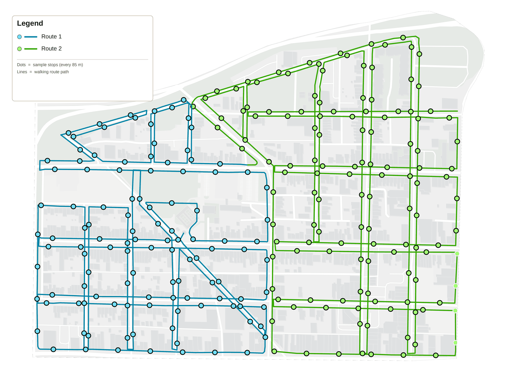
No street showed a single uniform heat-threat level on any given day, as many as four different levels were recorded along a single block. WBGT peaked on June 24th, with the majority of the neighborhood falling under a "high" or "extreme" heat designation. Aggregating the data made it possible to identify relative "hot spots" as priority areas for intervention.
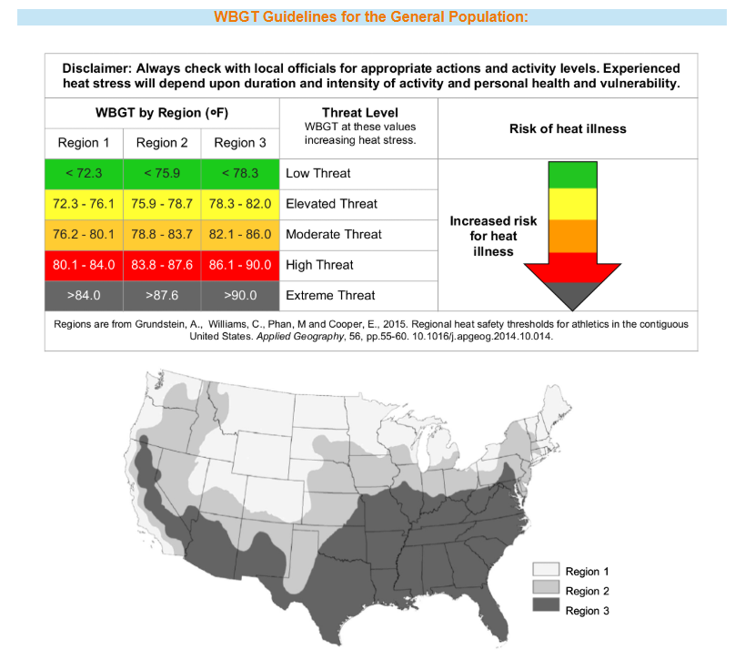
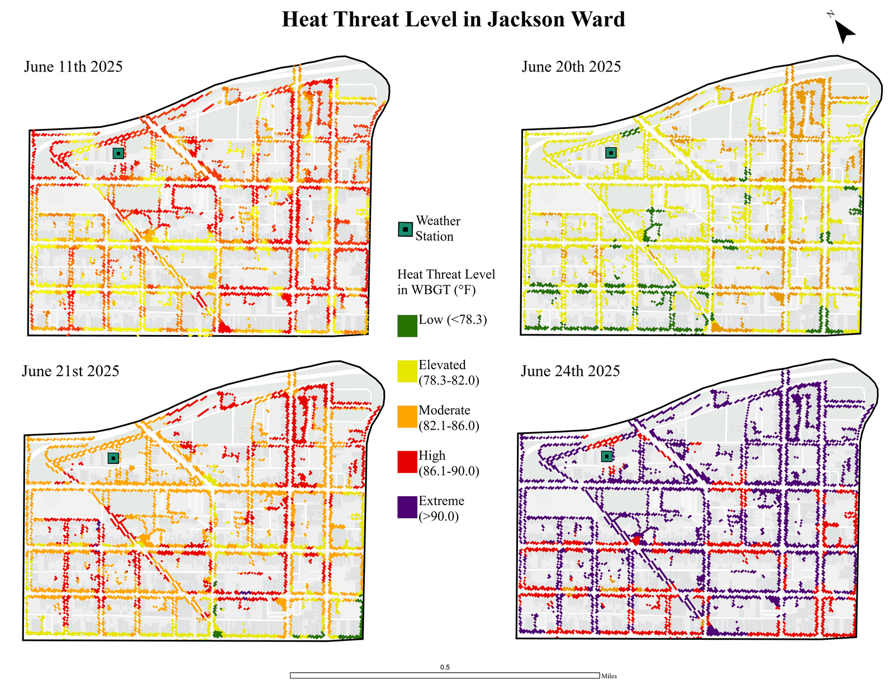
A Kruskal-Wallis test with a post-hoc pairwise Wilcoxon comparison (a nonparametric alternative to ANOVA) confirmed that shade type is a statistically significant determinant of sidewalk heat. Surface temperature was higher on unshaded sidewalks than on tree-lined sidewalks by an average of 24.0°F, and higher than sidewalks with structural shade by 21.7°F. The effect on WBGT was smaller but still significant, about 1.1°F cooler under tree canopy.
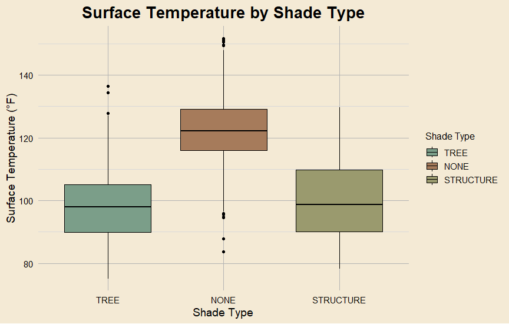
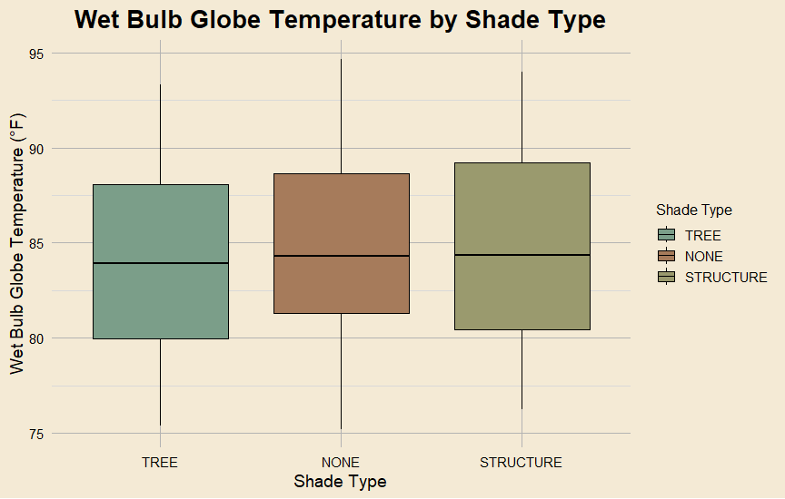
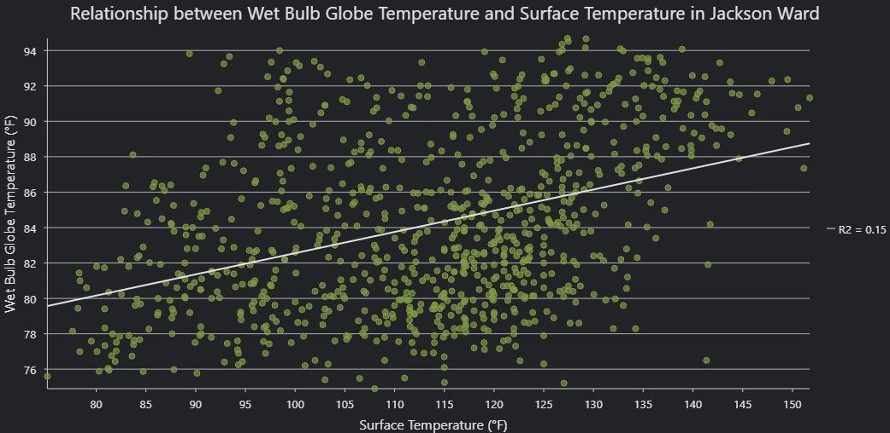
The hottest and coolest identified spots both sit on W. Marshall Street, only about four blocks (~0.25 miles) from each other. On average the hottest spot ran 44.7°F hotter in surface temperature and 2.5°F hotter in WBGT than the coolest, a contrast that tracks directly with the difference in tree canopy between the two locations.
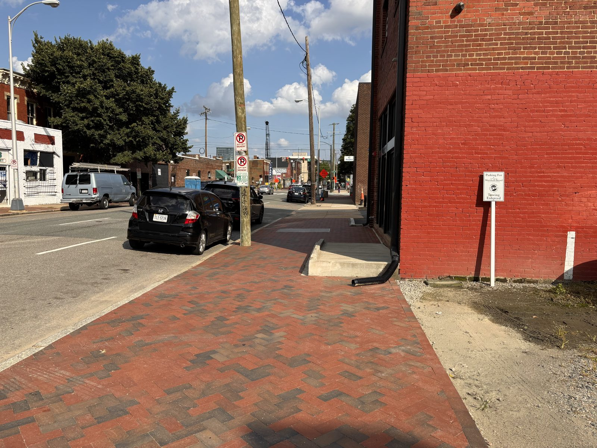
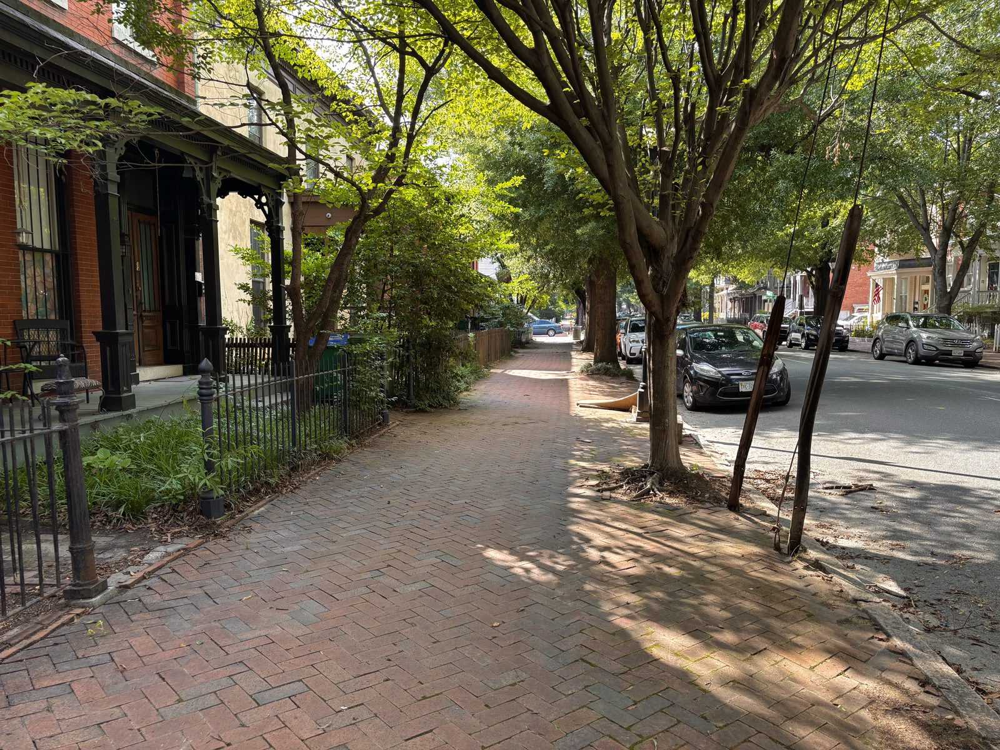
Comparing the team's Kestrel readings against the neighborhood weather station, a paired t-test found a statistically significant difference in wet-bulb temperature (standard deviation of the difference: ±2.8°F; range: 18.5°F). In other words, the heat people feel on the sidewalk can diverge meaningfully from the regional forecast, a disconnect with real public-health implications.
The hot-spot mapping fed directly into an intervention. Working with the City of Richmond's arborist, the team identified empty tree wells in the hottest areas of the neighborhood and selected suitable trees to plant in them. Each tree is paired with a plaque bearing a quote from a notable figure from Jackson Ward, tying the heat-mitigation effort back to the history and culture of the neighborhood it serves. The trees were planted in Fall 2025.
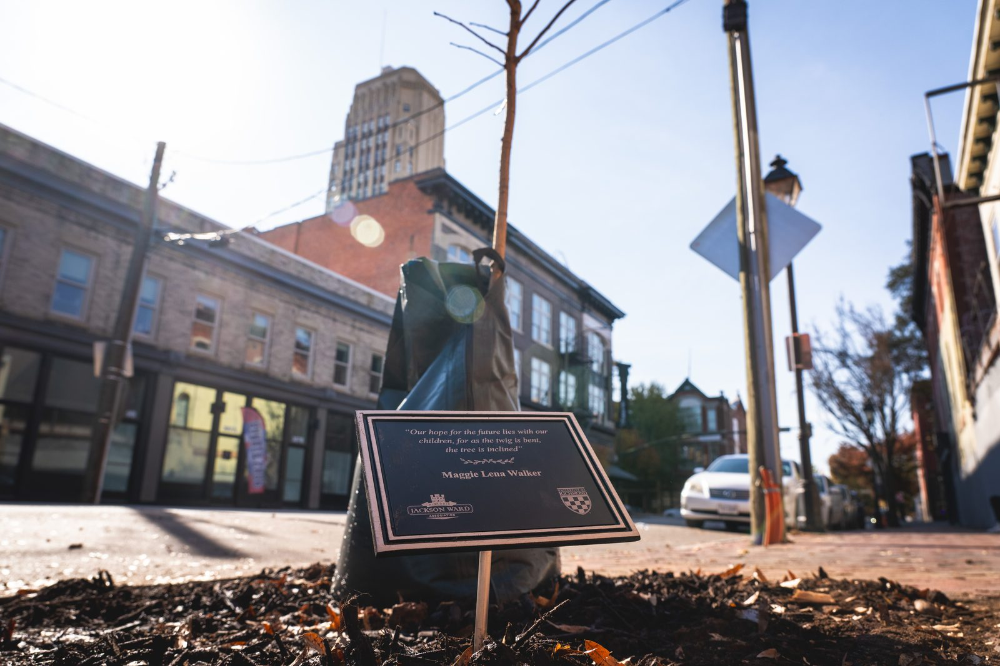
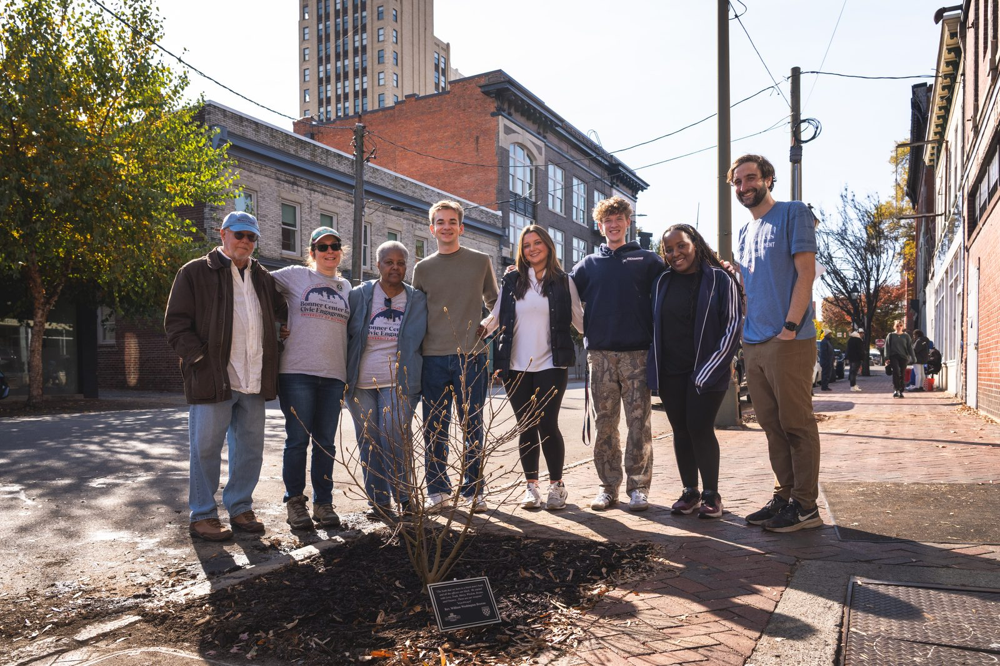
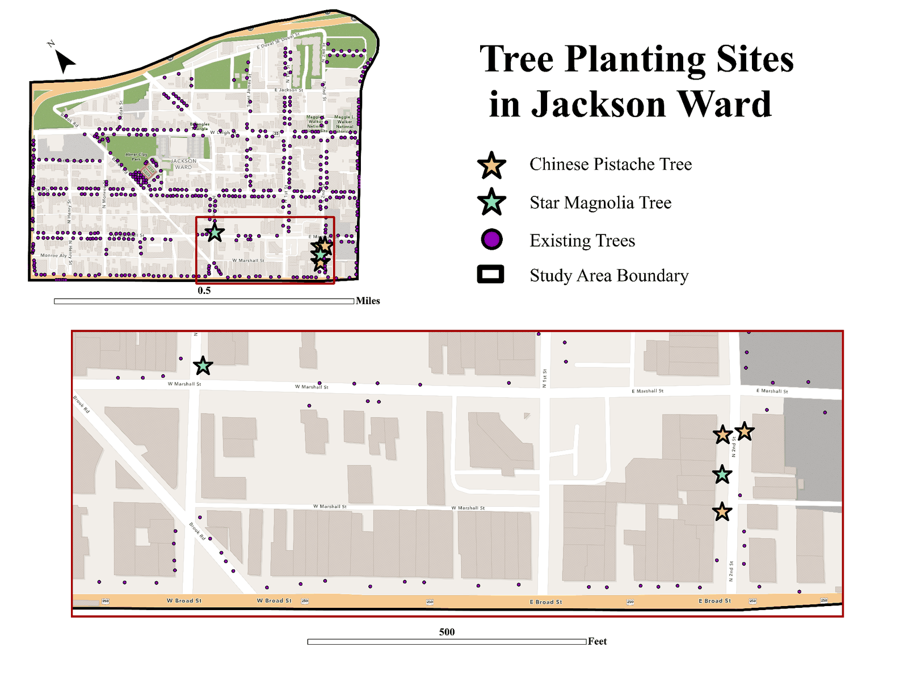
This work was presented at academic conferences, including a 2025 meeting of the American Association of Geographers.
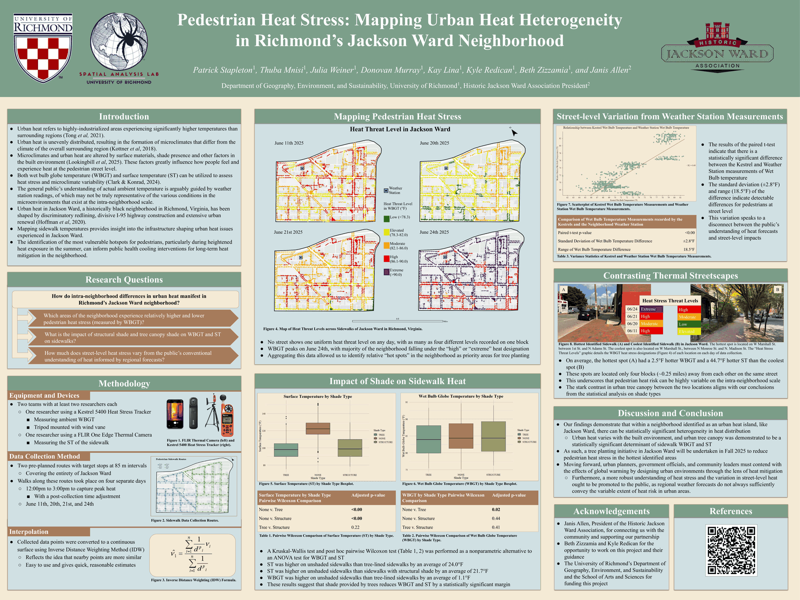
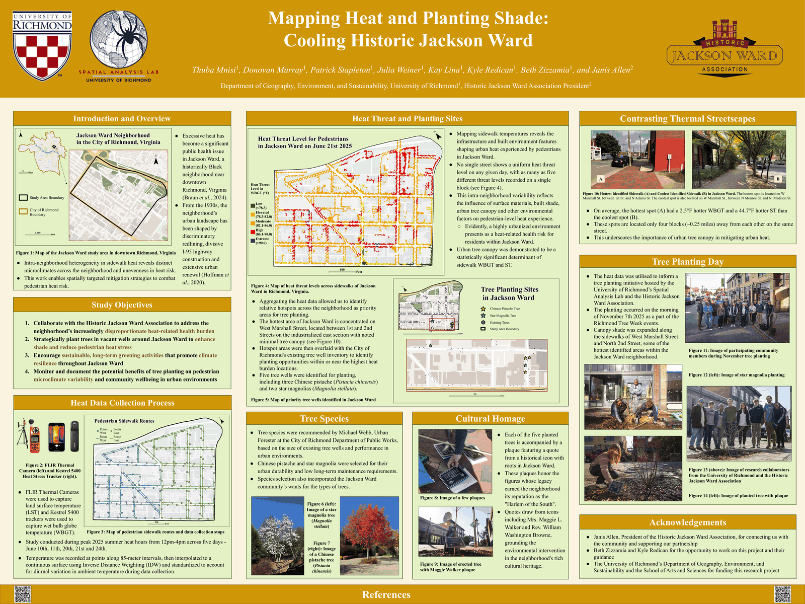
Patrick Stapleton · Thuba Mnisi · Julia Weiner · Donovan Murray · Kay Lina
Kyle Redican, University of Richmond, Department of Geography, Environment & Sustainability
Janis Allen, President of the Historic Jackson Ward Association. The association is committed to developing awareness of Jackson Ward's history and integrating it into the modern-day experience of the neighborhood. Learn more at hjwa.org.
Beth Zizzamia, GIS Operations Manager, University of Richmond
University of Richmond, School of Arts & Sciences Undergraduate Summer Research Fellowships